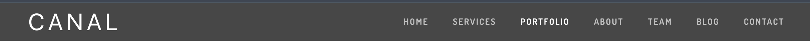

Thank you & congratulations for purchasing Canal HTML template! This documentation will serve as a guide in case you want to customize any component of the template.
However, if you have any questions that are beyond the scope of this help file, please feel free to email via my user page contact form here.
Author:
Vishu
Contact:
visingh.in@gmail.com
Author URL:
http://www.vishusingh.com
Current Version:
1.0.0
Documentation Version:
1.0.0
Created:
14 Nov, 2017
Installing the html template is fairly simple, all you have to do is upload the right files to your server.
http://www.yourdomain.com, or if you uploaded it inside a directory on your server then it'd be accessible at http://www.yourdomain.com/directory.Here's the unsplash.com collection that contains images used in the template demo.
Revolution Slider on homepage --
Below is the excerpt from revolution slider's markup on homepage (index.html)
<!-- Intro section starts-->
<section id="intro-section">
<div class="rev_slider_wrapper fullwidthbanner-container" style="margin:0px auto;background-color:#c9d5dc;padding:0px;margin-top:0px;margin-bottom:0px;">
<div class="rev_slider" id="rev_slider_1" data-version="5.4.5" style="display:none;">
<ul>
<li data-index="rs-3074" data-transition="fade" data-slotamount="default" data-hideafterloop="0" data-hideslideonmobile="off" data-easein="default" data-easeout="default" data-masterspeed="1500" data-rotate="0" data-saveperformance="off" data-title="Intro">
<!-- MAIN IMAGE--><img class="rev-slidebg" src="css/assets/images/transparent.png" alt="" data-bgposition="center center" data-bgfit="cover" data-bgrepeat="no-repeat" data-bgparallax="5" data-no-retina="">
<!-- LAYERS-->
<!-- LAYER NR. 1-->
<div class="tp-caption tp-resizeme rs-parallaxlevel-6" id="slide-3074-layer-1" data-x="['right','right','center','center']" data-hoffset="['-254','-453','70','60']" data-y="['middle','middle','middle','bottom']" data-voffset="['30','50','211','25']" data-width="none" data-height="none" data-whitespace="nowrap" data-type="image" data-responsive_offset="on" data-frames="[{"from":"x:right;","speed":1500,"to":"o:1;","delay":2500,"ease":"Power3.easeOut"},{"delay":"wait","speed":1500,"to":"opacity:0;","ease":"Power4.easeIn"}]" data-textalign="['left','left','left','left']" data-paddingtop="[0,0,0,0]" data-paddingright="[0,0,0,0]" data-paddingbottom="[0,0,0,0]" data-paddingleft="[0,0,0,0]" style="z-index: 5;text-transform:left;border-width:0px;">
<img src="css/assets/images/macbookpro.png" alt="" data-ww="['1000px','1000px','500px','350px']" data-hh="['600px','600px','300px','210px']" width="1000" height="600" data-no-retina="">
</div>
...
Notice the img tag in the markup above, it is the main background of the slide and has source , set it to your image to load it in the slider. Same goes for other img tags within the slider ul.
The theme is built on Bootstrap 4.0.0-beta, check out it's documentation for more info.
Optionally, you can take advantage of the power of pugjs to customize this template, Pug is a efficient way to write clean HTML markup.
Canal is built on modular pug templates which can be found in the 'Pug-Source' folder in the downloaded package, it also comes with a Codekit config file that you can optionally use to set up your project if using Codekit.
If you're not into all that PugJS templating stuff, you can of course edit the HTML files directly.
The general markup structure for the theme is as follows, the content is divided into modular sections and formatted using bootstrap's latest flexbox powered grid system, i.e. classes like col-md-9 etc
<!DOCTYPE html>
<html>
<head>
<title>Canal - Multipurpose HTML theme</title>
<link rel="stylesheet" href="bower_components/bootstrap/dist/css/bootstrap.min.css">
<link rel="stylesheet" href="css/entypo.css">
<link rel="stylesheet" href="https://fonts.googleapis.com/css?family=Dosis:400,500,600,700&subset=latin-ext">
<meta name="viewport" content="width=device-width, initial-scale=1">
<link rel="stylesheet" href="css/slider-revolution/layers.css">
<link rel="stylesheet" href="css/slider-revolution/navigation.css">
<link rel="stylesheet" href="css/slider-revolution/settings.css">
<link rel="stylesheet" href="css/main.css">
</head>
<body data-spy="scroll" data-target="#navbar-toggle">
<!-- Header starts -->
<header class="header-section">
// Header content here
</header>
<!-- Intro section starts-->
<section id="intro-section">
<!-- Intro section ends-->
<!-- Marketing section starts-->
<section id="services-section">
<!-- Marketing section ends-->
<!-- Portfolio section starts-->
<section id="portfolio">
<!-- Portfolio section ends-->
<section id="re-imagined">
<!-- Re-imagined section ends-->
<section id="prod-showcase">
<!-- Product showcase section ends-->
<section id="about-us">
<!-- About us section ends-->
<section class="dark-bg ptb90 mt50" id="team">
<!-- Team section ends-->
<section id="blog-posts">
<!-- Blog section ends-->
<section class="pt120" id="map">
<!-- Map section ends-->
<section id="contact">
<!-- Footer section starts-->
<section id="footer">
<!-- Footer section ends-->
</body>
</html>
Canal is built using SASS, you can find the source scss files in the bundled /source folder or edit the CSS files directly
Here's a list of the CSS files that the template uses, you can find more information on opening each file:
| File Name | Description |
|---|---|
main.scss |
All the theme styles are here. |
libs.scss |
CSS file imports for plugins used in the template. Imports bootstrap 4 beta, Entypo icons, Font Awesome, photoswipe gallery and Google fonts used in the template
libs.scss is used in it's compiled and minified form in css/libs.css by the template |
twentytwenty.scss |
Source styles for ZURB's twentytwenty plugin to show visual differences. |
Switch to dark layout by adding dark class to the body of any page
Currently there are 2 accent color options available on the theme, switch between them by adding accent-1 and accent-2 classes to the body tag on any page.
styles.css contains all of the specific stylings for the page. The file is separated into sections like so:
/* === HEADER SECTION === */ some code /* === NAVIGATION === */ some code /* === BUTTONS === */ some code /* === FOOTER SECTION === */ some code etc, etc.
If you would like to edit the color, font, or style of any elements in one of these sections, you would do the following:
All the following changes would be made in /css/main.css
You can change header's background color by editing the following color code in source/scss/main.scss or css/main.css if you prefer vanilla CSS.
 Global header - Normal and FixedThere are 2 states of the header, normal and fixed, it switches to fixed automatically on scroll.
/* Header */
.header-section {
background: transparent;
...
}
...
...
.header-section.fixed {
background: rgba(51, 51, 51, 0.9);
You can change all the styles from source/scss/main.scss or css/main.css if you prefer vanilla CSS, all other CSS files are libraries or plugins.
When changing elements like buttons and nav links, make sure to edit the hover states as well.
If you find that your new style is not overriding, it is most likely because of a specificity problem. Scroll down in your CSS file and make sure that there isn't a similar style that has more selector weight.
The theme utilizes Font Awesome hence you are free to use any of the icons in it. Take a look at the font awesome cheatsheet for the complete set of icons you can use
All the icons are present in the markup as i tags as follows:
<i class="icon-class-name"></i>
The class name decides which icon shows up from the FontAwesome library, which you can refer to over at the cheatsheet.
The theme utilizes a couple of jquery plugins
You'll find the calls to these plugins in js/plugins.js as @codekit-prepend special comments, these are set up to be picked by Codekit and compiled into a minified version - js/plugins-min.js
| Tag | Description |
|---|---|
boostrap.min.js |
A collection of plugins from bootstrap framework. |
jquery.min.js |
jQuery is a Javascript library that greatly reduces the amount of code that you must write. |
jquery.themepunch.revolution.min.js and multiple supporting plugins |
Revolution slider plugin that comes bundled with the theme! |
shuffle.js |
Shuffle JS to make a sortable list of images in portfolio section. |
photoswipe.js |
Photoswipe JS gallery for the lightbox in the portfolio section. |
jquery.twentytwenty.js |
A beautiful visual diff tool called Twenty Twenty from Zurb foundation, used in 'Compare and see' section. |
main.js |
This is where all of the plugins stated above are set up. |
Configuration for Revolution slider is done in js/main.js starting from line #4:
// Setting up Revolution slider
$('#rev_slider_1').show().revolution({
sliderType: "hero",
sliderLayout: "fullscreen",
dottedOverlay:"none",
delay:9000,
navigation: {
},
responsiveLevels:[1240,1024,778,480],
visibilityLevels:[1240,1024,778,480],
gridwidth:[1400,1240,778,480],
gridheight:[768,768,960,720],
lazyType:"none",
spinner:"off",
autoHeight:"off",
disableProgressBar:"on",
hideThumbsOnMobile:"off",
hideSliderAtLimit:0,
hideCaptionAtLimit:0,
hideAllCaptionAtLilmit:0,
debugMode:false,
fallbacks: {
simplifyAll:"off",
disableFocusListener:false,
}
});
...
...
After you have an API key, head over to index.html or index.jade, search for this text --> "PUT-KEY-HERE" and replace it with your key.
To change location pinned on the map, you need to enter it's co-ordinates on line #143 in js/main.js. You can obtain such co-ordinates using one of many sites like this one.